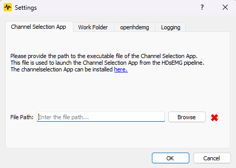

Application Settings
Application Settings¶
This section descibes how to configure the application settings in the hdsemg-pipe application. The application settings allow you to specify the working directory of the application as described in the Opening Data section, as well as the path to the external hdsemg-select application and the openhdemg executable. The settings dialog can be accessed from the top menu bar under Settings -> Preferences.

Channel Selection App¶
The Channel Selection App section allows you to specify the path to the external hdsemg-select application. This is required for the channel selection step in the processing pipeline. If the path is set correctly, the application will display a check icon next to the path. If the path is not set or incorrect, a warning icon will be displayed instead. The application also displays clear instructions on how to set the path if it is not set correctly.
Work Folder¶
The Work Folder section allows you to specify the working directory of the application. This is the directory where all the data will be stored and processed. As soon as you open a file, the application will create a subdirectory in the working directory with the name of the file or folder. Detailed information can be found in the Opening Data section.
Openhdemg Executable¶
The Openhdemg Executable section allows you to specify the path to the openhdemg executable. This is required for the decomposition step in the processing pipeline. The application wants a path to the openhdemg virtual environment, which is the folder where the openhdemg executable is located. If the path is set correctly, the application will display a check icon next to the path. If the path is not set or incorrect, a warning icon will be displayed instead. More details about the installation of openhdemg can be found in the Official Openhdemg Documentation.
Logging Level¶
The Logging Level section allows you to specify the logging level of the application. This is useful for debugging and troubleshooting purposes. The available logging levels are:
- DEBUG: Detailed information, useful for debugging.
- INFO: General information about application operations.
- WARNING: Indications of potential issues.
- ERROR: Error messages indicating problems that need attention.
- CRITICAL: Severe errors that may prevent the application from functioning.
The current logging level is displayed in the settings dialog, and you can change it by selecting a different level from the dropdown menu and pressing the "Apply" button.
As soon as the settings dialog is closed by pressing the "OK" button, the application will save the settings to a JSON file in the application data directory. The file is named
config/config.jsonand contains all the configuration options, including the working directory, external hdsemg-select path, openhdemg executable path, and logging level.